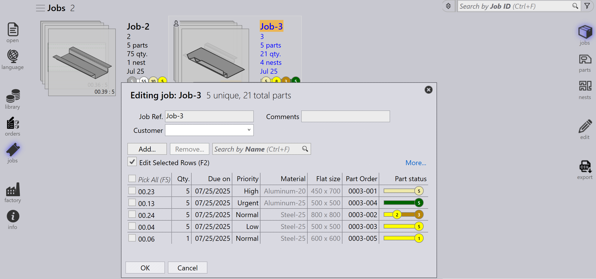

Zobrazení zakázek
Tato část vysvětluje různá zobrazení dostupná v zobrazení zakázek, včetně zakázek, dílů, hnízdění, úprav, simulace a exportu.
Zakázky
Výběrem možnosti úlohy se zobrazí seznam všech zakázek aktuálně nastavených v softwaru. Můžete dvakrát kliknout na zakázku pro zobrazení jejích podrobností nebo kliknout pravým tlačítkem pro přístup k dalším možnostem.
-
Zakázky jsou zobrazeny v dlaždicovém zobrazení, kde je každá zakázka zobrazena se základními vlastnostmi jako ID zakázky, Reference zakázky, Jméno zákazníka, Celkový počet dílů, Termín splnění, Stavový řádek zakázky atd.
-
Každá dlaždice zakázky také zobrazuje obrázky dílů v formátu skládaných karet. Všemi díly v zakázce můžete procházet pomocí kolečka myši.

Podrobnosti zakázky
-
Dvojité kliknutí na dlaždici nebo stisknutí klávesy Enter po výběru dlaždice přepne zobrazení do režimu podrobností.
-
Stránka podrobností zobrazuje seznam dílů spolu s uhnízdněnými listy (uspořádání), pokud existují.
-
Pro přepínání mezi zakázkami na stránce podrobností použijte šipky Nahoru/Dolů.
-
Posunutí kolečka myši přes zásobník dílů zvýrazní díl jak v seznamu dílů, tak v uspořádáních.
-
Výběr uspořádání zvýrazní uspořádání a všechny díly na něm uhnízdněné v seznamu dílů. Zvýraznění se automaticky vypne po minutě.

-
Souhrn optimálního rozmístění:
-
Díly: Zobrazuje celkový počet položek objednávky a celkové množství v zakázce.
-
plechy: Zobrazuje celkový počet uhnízdněných listů spolu s celkovým množstvím listů.
-
-
Pracovní kroky:
-
Ohýbání: Zobrazuje přiřazený stroj a jeho objednané množství ke zpracování.
-
Řezání: Zobrazuje přiřazený stroj a jeho objednané množství ke zpracování.
-
Priorita
-
Nejprve klikněte na ikonu Jobs na levé straně obrazovky, vyberte zakázku, kterou chcete upravit, a poté klikněte na edit na pravé straně obrazovky (ujistěte se, že je vybrána možnost Jobs).
-
Případně klikněte pravým tlačítkem na vybranou zakázku a klikněte na ikonu Odhlásit dokument pro editaci.
-
Když kliknete na edit, zobrazí se okno úpravy zakázky. V tomto okně můžete nastavit nebo změnit prioritu zakázky.

-
Na základě priority části zakázky je reference zakázky v dlaždici zakázky příslušně barevně označena.
-
Části zakázky jsou seřazeny nejprve podle priority a poté podle termínu splnění. Jsou také barevně označeny podle své priority.
-
Při hnízdění jsou nejprve zvažovány díly s prioritou Urgent, následované High, pak Normal a nakonec jsou díly s prioritou Low umístěny do zbývajícího prostoru na listech hnízdění.
-
Listy hnízdění jsou také seřazeny a barevně označeny podle priority.
| Priorita zakázky | Barevný popis |
|---|---|
|
Naléhavá |
|
Normální |
|
Vysoká |
|
Nízká |


Stav
-
Stavový řádek zakázky používá barevné kódy k označení pokroku nebo stavu zakázky na základě zpracovaného nebo zbývajícího množství.
-
Díly v rámci zakázky a listy hnízdění jsou také zvýrazněny odpovídajícími barvami, aby odrážely svůj individuální stav v rámci celkové zakázky.
-
Barevné kódování zlepšuje sledování a zajistí, že operátoři mohou snadno vidět stav výroby na první pohled.


| Stav zakázky | Popis |
|---|---|
|
Nepřipraveno |
|
Optimální rozmístění |
|
Připraveno |
|
Naplánováno ohýbání |
|
Chybí plech |
|
Fronta ohýbání |
|
Fronta řezání |
|
Hotovo |


Díly
Zobrazení aktivních dílů zobrazuje všechny díly, které jsou aktuálně rozpracované v rámci aktivních zakázek.
Každý díl je reprezentován jako dlaždice zobrazující klíčové podrobnosti jako název dílu, rozměry, materiál, tloušťku, množství a termín splnění. Je také zobrazen vizuální náhled dílu.
Toto zobrazení pomáhá uživatelům monitorovat stav zpracování jednotlivých dílů a sledovat jejich pokrok v probíhajících zakázkách.

Hnízdění
Zobrazení aktivních hnízdění zobrazuje všechna hnízdění, která jsou aktuálně rozpracovaná v rámci aktivních zakázek.
Každé hnízdění je reprezentováno s relevantními podrobnostmi jako počet dílů a stav zpracování. Je také zobrazeno vizuální uspořádání uhnízdněných dílů.
Toto zobrazení pomáhá uživatelům monitorovat pokrok hnízdění a sledovat, jak jsou díly uspořádány a zpracovávány na listech.

Úpravy
Možnost Edit umožňuje upravit vybranou položku.
Na základě aktuálního zobrazení je vybraná instance otevřena pro úpravy:
-
V zobrazení Jobs je vybraná zakázka otevřena pro úpravy.
-
V zobrazení Active Parts je vybraný díl otevřen pro úpravy.
-
V zobrazení Active Nests je vybrané hnízdění otevřeno pro úpravy.

Export csv
Možnost Export vám umožní vybrat informace o zakázce a exportovat je do CSV souboru.
-
Klikněte na ikonu jobs.
-
Klikněte na možnost export na pravé straně obrazovky.

-
Zobrazí se dialogové okno s dostupnými poli:

-
Vyberte zaškrtávací políčka pro pole, která chcete exportovat.
-
Použijte možnost Group By, pokud chcete seskupit data podle vybraného pole.
-
Klikněte na Export pro vygenerování CSV souboru.
Další informace
Na pravé straně obrazovky jsou také tři další ikony, které jsou simulovat, Goto a zpět.
-
Simulate otevře vybranou položku pro podrobnější zobrazení.
-
Goto přepne zaměření a zobrazení na díl nebo hnízdění, které je vybráno.
-
Back se vrátí o jednu úroveň zpět od místa, kde se právě nacházíte, například kliknutí na zpět při simulaci vás vrátí zpět k hlavní zakázce a ze zakázky vás vrátí zpět k hlavnímu zobrazení zakázek.